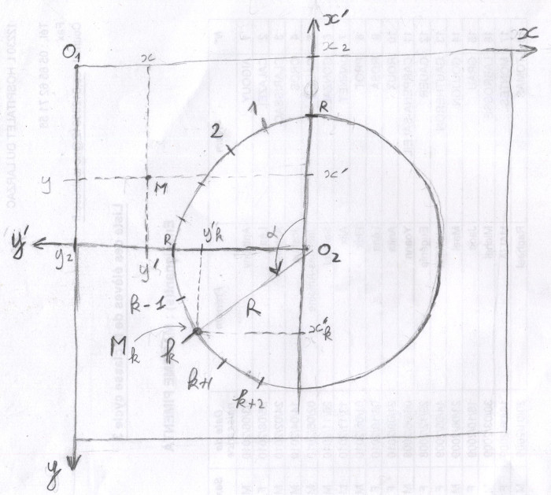

Le but est d'utiliser javascript pour générer en SVG les animations exposées dans la vidéo "La face cachée des tables de multiplication - Micmaths".
Notions abordées : coordonnées, trigonométrie, modulo.
Prérequis : Javascript, SVG.
Notions abordées : coordonnées, trigonométrie, modulo.
Prérequis : Javascript, SVG.
Prototype
Le programme à écrire doit donner à peu près ce résultat :
Change table
Change Modulo
Table:
Modulo:
Ce dessin représente une table de multiplication ; l'état initial est un dessin de "la table de 2 modulo 200".
Les contrôles du bas permettent de changer la table représentée et le modulo utilisé.
Les contrôles de droite font la même chose et permettent de lancer une animation en changeant les valeurs et en rafraîchissant l'affichage à intervalles réguliers (100 ms).
Exercice (TD)
Nous allons diviser le travail en deux parties :
- Dessiner une table circulaire.
- Ecrire une petite application javascript pour gérer le formulaire et les animations.
Dessiner une table circulaire
Le but est donc d'écrire un programme qui dessine une table de multiplication donnée pour un modulo donné.
Modulo
Sur une horloge, les minutes fonctionnenent en modulo 60 et les heures en modulo 12.
64 modulo 60 = 4
13 modulo 12 = 1
On utilise aussi souvent les heures en modulo 24 : 25 h = 1 h du matin le jour suivant.
Les mois de l'année sont en modulo 12.
Dans la plupart des langages informatiques, l'opérateur modulo utilise le symbole %.
On a par exemple :
D'une manière générale, la définition du modulo est :
"Opération binaire qui associe à deux entiers naturels le reste de la division euclidienne du premier par le second".
Sur notre cercle, le modulo représente le nombre de points sur le cercle.
Sur une horloge, les minutes fonctionnenent en modulo 60 et les heures en modulo 12.
64 modulo 60 = 4
13 modulo 12 = 1
On utilise aussi souvent les heures en modulo 24 : 25 h = 1 h du matin le jour suivant.
Les mois de l'année sont en modulo 12.
Dans la plupart des langages informatiques, l'opérateur modulo utilise le symbole %.
On a par exemple :
9 % 7 = 2
D'une manière générale, la définition du modulo est :
"Opération binaire qui associe à deux entiers naturels le reste de la division euclidienne du premier par le second".
Les nombres sur le cercle vont de 0 à (
modulo - 1).
Exemple : table de 2 modulo 10, les nombres vont de 0 à 9.
On divise le cercle en 10, et chaque point sur le cercle représente un nombre. Si deux nombres sont reliés par la relation "multiplier par 2", on dessine une ligne reliant ces deux nombres.
ligne 1 - 2
ligne 2 - 4
ligne 3 - 6
etc.
On a par exemple une ligne entre 8 et 6 parce que
8 x 2 = 16 = 6 % 10
Ecrire un programme javascript qui génère ce dessin.
Identifier les paramètres
Voir solution
2 paramètres principaux :tablemodulo
svgSize: taille de l'image svg, en px.gap: espace entre le cercle et le bord de l'image, en px.
Les repères
Un repère sert à gérer des coordonnées. Il est caractérisé par son centre et ses axes.Noté R(0, x, y) : repère de centre O muni de 2 axes, x et y, pour mesurer les coordonnées.
R = Repère de l'écran
Notre repère de départ est le système de coordonnées qu'on utilise en svg : <circle cx="300" cy="300" r="250"">L'origine est en haut à gauche, les x vont croissant vers la droite, les y vont croissant vers le bas.
Noté sur le dessin R(01, x, y) 
R' = Repère du cercle
Le centre du repère est le centre du cercle O2, et l'axe des x est dirigé vers le point du cercle où se trouve écrit le chiffre 0, en haut dans notre cas.Noté sur le dessin R'(02, x', y')
On note r le rayon du cercle.
Exprimer, en fonction de k et de r, les coordonnées (x'k, y'k) dans le repère R' du point Mk où va être écrit le nombre k sur le cercle.
Exprimer, en fonction de k et de r, les coordonnées (x'k, y'k) dans le repère R' du point Mk où va être écrit le nombre k sur le cercle.
Changement de repère
On connaît les coordonnées (x', y') mais on a besoin des coordonnées (x, y) pour renseigner le svg.
Trouver les relations donnant (x, y) en fonction de (x', y').
Par exemple sur l'axe x, quelle est la relation entre x, x2 et y' ?
Trouver une relation similaire sur l'axe y.
Indication
Regardez le point M sur le dessin.Par exemple sur l'axe x, quelle est la relation entre x, x2 et y' ?
Trouver une relation similaire sur l'axe y.
Organisation du code
Dans un premier temps, on se concentre sur le code à écrire pour générer un seul dessin.Utiliser une classe
Test
Utilisez votre code pour générer une gallerie comme ci-dessous.